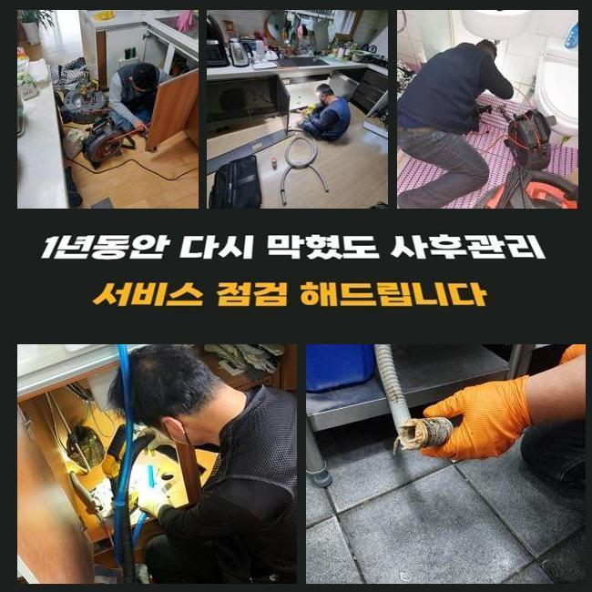
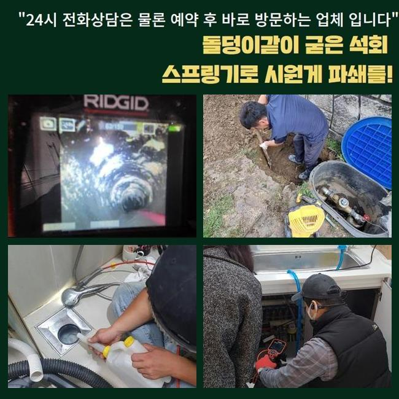
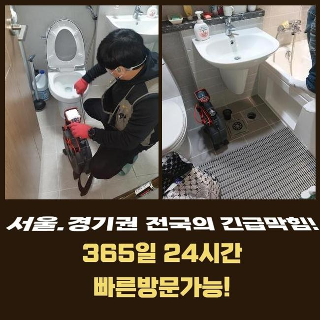
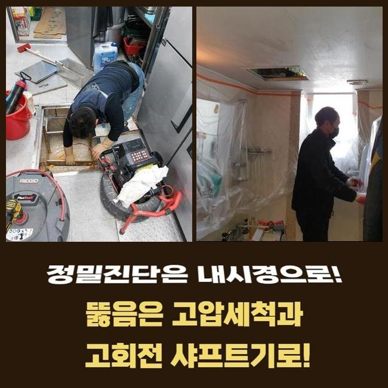
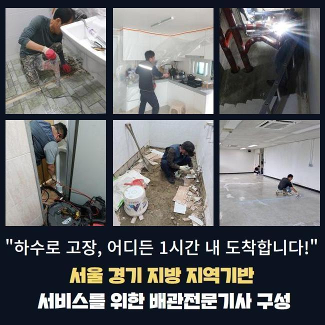
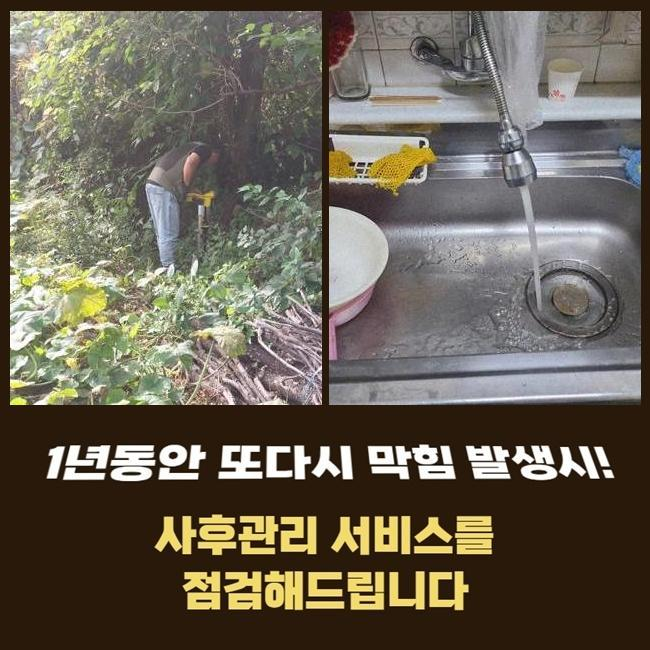

🏠 고양시 화정동화장실막힘 지축동 냄새차단 배관전문
고양 화정동 하수구막힘 전문 시공 후기

📋 작업 개요
- 위치: 고양 화정동, 화정동, 고양
- 서비스 유형: 하수구막힘, 배관막힘, 맨홀막힘, 역류해결, 뚫는업체, 배관청소, 고압세척, 설비공사, 배관보수, 악취차단
- 작업 일시: 2025. 6. 8. 11:14
- 업체명: 하수구수사대 (010-5615-2118)
🔍 문제 상황
고양시 화정동화장실막힘 지축동 냄새차단 배관전문
음식을 판매하는 가게에서 하수구의 불능으로 정상영업이 불가하다고 조속히 고쳐주면 좋겠다는 연락을 직접 받았는데요
음식점과 같은 매장은 주방의 하수구가 차단되는 사건 때문에 당장 물을 활용하지 못하게 된다면 조리나 청소를 하지 못하니 문을 닫아야만 합니다
이 사안을 해결해야만 장사하시는 분의 손실을 다운시킬 수 있기 때문에 가까운 시일 내에 찾아뵙고 보수해드리기로 했어요
맞이해주신 고객님께서는 바닥부에 설치된 배수로에서 물 방출이 이뤄지지 않으며 깊숙하게 자리해 있는 하수관에서 물 솟구침도 더해진 상황이라고 하셨어요
식당 안에 달려있는 주방의 배수구 쪽도 체크하고 옥외 배관로까지도 관통시켜드려야 하기에 복잡한 단계로 나눠지는 하수구작업이 예정되어 있었습니다
계획적인 접근을 위하여 전체적으로 현장 상황을 조사해본 뒤에 작업에 필요한 기간을 분석한 다음 안내합니다
평범하지 않은 관로 구조나 피해가 광범위할 시 결점없이 개선하고자 한다면 추가 공사가 있을 수 있습니다
바깥쪽의 하수시설 내부를 열어보려고 했는데 맨홀 덮개가 부식이 많이 되어있었고 맨홀 옆의 바닥도 수분기가 가득 들어가서 더러워져 있었습니다
부식된 곳에 파손이 일어나지 않게끔 신중을 기하며 처리하려고 다짐하고 착수하게 됐습니다

🔎 원인 분석
💡 전문가 진단: 정밀 진단 장비를 사용하여 슬러지의 고착 여부를 판명하고 타격/세척 작업을 실시했습니다.
뚜껑을 들어내자마자 보이는 건 지저분한 오물들이 눈에 들어왔습니다
번들대는 유분기가 부유하고 있는 것을 바로 확인할 수 있는 상태에 이르러서 우선은 입구 쪽의 정리를 들어가서 안을 닦아내야 했습니다
가까운 쪽의 배수로를 우선 말끔하게 닦아내고 배관용 카메라 장비를 넣어서 내측을 관찰해봐요
크고 작은 관로들이 어떻게 이어져 있는지 밑그림을 그린 후에는 고압수를 쏴서 관로 전신에 부착된 슬러지들을 모두 없애기로 절차를 설정했습니다
초반 청소가 안되면 카메라를 돌려봐도 선명한 내면을 살펴보기 힘들 듯 해서 석션기로 잔수를 흡입하는 단계를 선행해야 했습니다
석션장치는 일반 청소기처럼 탁월한 흡입력이 있으며 안에 고인 잔수와 오물들을 강한 힘으로 한 곳으로 모아주는 역할을 담당하는데요
흡수하는 힘이 남다르므로 웬만한 딱딱하지않은 물체들은 쉽게 호스로 흡입되어 집수통 내에 차곡차곡 쌓입니다
점도가 높은 찌꺼기나 견고하게 접착된 찌꺼기는 제거가 까다로워서 석션기의 가동만으로는 배수로를 통쾌하게 소통시키는 현장들이 많지않은 것이 사실입니다
막혀있는 양상과는 무관하게 첫 주자는 항상 석션장비를 적용하고 있는 등 배수로의 정비를 위해서는 반드시 거쳐가야하는 과정입니다
석션을 돌려서 배관 통로를 싹 쓸어준 이후에 카메라를 깊숙이 배정해봤습니다
내시경을 쓰게 된다면 깊숙한 영역에 매립된 채 복잡다단한 구조의 배수로일지라도 꼼꼼히 확인하며 막힌 구간과 하수관의 컨디션에 대해서 단서를 찾아낼 수 있습니다

🔧 작업 과정
이번 현장을 들여다보니 기름기가 잔뜩 고인 유막이 많은 상태였습니다
쉽게 없어지지 않는 슬러지가 이번에 연락주신 식당의 주요한 촉매제가 되었을 거라는 추정이 됐습니다
요리나 설거지 중 수로 안으로 빠져나간 기름기가 점점 유속을 느리게 만들었고 이 장애물에 부딪혀서 그자리에 고여버리고 잔수가 자꾸만 고이면서 역류까지 일어난 거였네요
석션과 샤프트를 병행해서 청소를 하는 것도 중요하지만 하수들이 집합하는 맨홀 내부의 시설물까지 보완을 해드려야 했는데요
샤프트를 말씀드리자면 장비의 헤드에 갈고리 형식의 노커가 장착되어 있습니다
석션의 흡입으로는 역부족인 크기가 큰 침전물이나 장기간 변성된 채 머무르고 있는 고착물질을 타격하거나 소규모로 파편화할 수 있습니다
알려드린 효율적인 청소 기기들과 배관의 카메라까지 모조리 놓치지 않고 적용해야지 작업에 성공할 수 있고 가로막혀있는 배수로의 역시도 뚫어낼 수 있습니다
세부적인 조사에 착수해보았더니 워낙 방대한 양의 이물질이라 고압의 물을 분사하는 청소기법도 도움이 될 것 같았습니다
샤프트 석션으로 내부정화를 한 덕에 유속이 아까보다는 많이 좋아졌다는 걸 체감하고 다음으로 고압세척기를 넣어서 배관 환경 개선을 했습니다
높은 압력으로 응축된 물줄기를 정확한 좌표로 보내는 장비 몸체 위치를 설정해서 오물이 집합화가 되어있는 파트를 씻어나가기 시작했습니다
그 결과 둥둥 떠다니면서 통수불능을 야기했었던 기름 슬러지가 말끔하게 소멸했습니다!
작업 전 카메라로 배관상의 문제점을 제대로 모두 알아내고 난 다음에 여러 기술을 병행한 시공을 이행하여 내부에 있던 이물질을 없애야 한다는 사명감을 갖고서 성공할 수 있었던 것 같습니다
시공 단계를 끝내면서 내부 검토를 다시 해보니 통로도 훤하게 트이고 여기저기 부착되어있던 침전물이 마법처럼 사라졌으며 벽체까지도 말끔해져서 아래까지 개방되어있는 파이프를 보게 되어 뿌듯한 마음이었습니다
배수로 안에 뿌옇게 고정되어있던 하수도 시원스레 없어지고 그 모든 내부 오염원으로부터 해방됐어요
아무래도 식품을 판매하는 곳에서는는 식용유를 사용하는 양도 대폭 증가하기 때문에 아무래도 막힘이 생길 일이 더 많기도 합니다
미세한 조각의 음식물이나 미처 닦아내지 못한 기름기가 관로로 흘러가지 않게 실제 이용자분께서도 오염을 방지해야 합니다
육안상으로 개선을 체크했더라도 하수의 유속을 보며 시공이 원만하게 끝이 났는지 검사를 해보게 되는데요


✅ 작업 완료
집 안에서 물기를 받아서 퍼붓듯 부어주고 고압세척 작업을 한 외부하수구까지 막히는 기색 없이 배출이 시원하게 되는지 끝으로 검사해 드리는 절차입니다
옥외까지 내려보낸 물이 옥외 관로로 속속들이 모여드는 게 보고는 안심했던 것 같습니다
꽉 막힌 하수구를 회복시키고 곳곳의 검사를 마쳤다면 고객님 댁에서 나왔습니다
하수구가 봉인되어 버리면 아는 전문가가 없어서 자가처리를 해보시려다 오염원이 더 집적될 수 있습니다
배관문제에 대해 의뢰해주시면 얼른 장소로 향하여 물막힘이 발생한 뿌리까지 뽑아드릴테니 이 점 참고해주시면 감사드리겠습니다



⚠️ 하수구 배관 막힘 예방 및 관리 가이드
- ✅ 머리카락, 비닐, 물티슈 등 물에 분해되지 않는 이물질은 하수구 유입을 절대 금지해 주세요.
- ✅ 하수구 거름망을 씌우고 모여진 이물질은 주기적으로 쓰레기통에 바로 비워주셔야 합니다.
- ✅ 배관 노후가 심할 경우 이물질이 더 쉽게 걸리므로 주기적인 배관 세척(고압세척 등)을 권장합니다.
- ✅ 작업 후 1년 이내 재발 시 하수구수사대에서 무상 A/S 보증 서비스를 제공합니다.
💡 핵심 정리
- 확실한 장비 작업(내시경 점검 및 샤프트 스케일링)으로 원인을 뿌리 뽑습니다.
- 작업 후 1년 이내에 동일한 부위 재발 시 100% 무상 A/S 서비스를 보장합니다.
- 서울 · 경기 · 인천 전 지역에 24시간 언제든 긴급 출동할 수 있도록 항시 대기 중입니다.
❓ 자주 묻는 질문 (FAQ)
🚨 고양 화정동 하수구막힘 문제로 고민이신가요?
정확한 원인 진단과 확실한 시공으로 재발 없는 해결을 약속드립니다.
24시간 긴급 출동 | 서울 · 경기 · 인천 전지역 | 1년 내 재발 시 무상 A/S